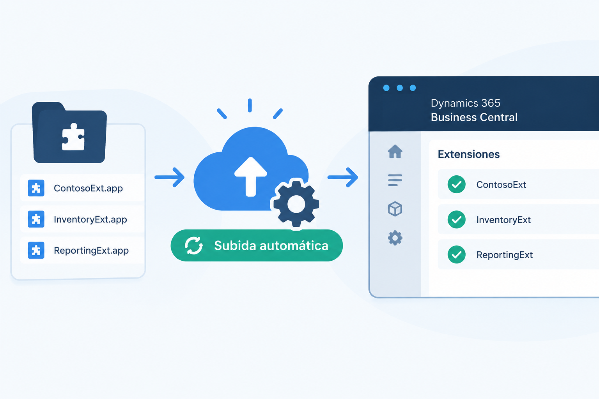

Deploy Your PTEs with the Admin Center API Before Business Central v30
Another entry in the series on Business Central features being retired. After the one on SOAP, this time it's a change that touches almost everyone who works with extensions: uploading an app from the Extension Management page inside Business Central is going away.
The good news is that the replacement is already available and fully working. In this post we look at what exactly changes, how to upload extensions from the Admin Center, and how to automate the whole thing with the Admin Center API.

What's going away, and when
Until now the routine was straightforward: open Business Central, go to Extension Management, choose Manage > Upload Extension, pick the .app file and you were done. Partners did it, and so did plenty of customers with their own in-house development team.
That upload option is being removed. Microsoft already shows the warning on the page itself and documents it in the deprecated features list: starting with version 30 (2027 release wave 1, April 2027), extensions can no longer be uploaded from Extension Management.
It's worth being precise about the scope. The Extension Management page itself isn't disappearing — you'll still use it to review what's installed in an environment. What goes away is the upload action.
Why the change? Centralizing deployment in the Admin Center gives administrators a single control point over what gets installed in each environment, when it gets installed, and who is allowed to do it, instead of depending on whoever happens to have access inside the application.
Uploading extensions from the Admin Center
The new path is the Business Central Admin Center, and you'll need administration permissions on the tenant to get there.
- Open the Admin Center and you'll see your environments listed, along with their version and upcoming updates.
- Pick the production environment, or the sandbox where you want to test first.
- Go to the Apps section. This is where you could already review installed extensions, both global (AppSource) and per-tenant.
- Use the new action to upload and install your extension.
What makes this more than a straight replacement is the control it adds over when the installation happens. You can choose to:
- Install immediately.
- Install with the next minor update — for example, when the environment moves from 28.4 to 28.5.
- Install with the next major update.
- Schedule it inside an update window you define yourself.
The sync mode option is still there too, exactly as it worked in Extension Management.
During the transition period both methods work side by side. My recommendation is to start using the Admin Center now, so April 2027 doesn't catch you with processes that still need rewriting.
Automating deployment with the Admin Center API
If you manage a lot of customers or a lot of environments, uploading by hand through the portal doesn't scale. That's where the Admin Center API comes in: a documented REST API for managing environments and apps programmatically. Among the recent additions is exactly what we need here — uploading and managing per-tenant extensions.
That opens up several options:
- Community tooling. Stefano Demiliani, for instance, published an MCP server that lets an agent drive the Admin Center straight from Visual Studio Code, extension uploads included.
- Postman or any other HTTP client, for testing or one-off deployments.
- Your own code in .NET, Python or anything else that can authenticate against Microsoft Entra ID and issue REST calls.
- Business Central itself, by building an extension that consumes the API.
A worked example: deployments from inside Business Central
In the video I walk through an extension of my own that turns Business Central into a deployment console for a partner:
- A setup page listing the customers (tenants) you manage.
- For each customer, the list of environments, with a refresh action that pulls their current state.
- For each environment, the installed extensions, split between PTEs and dependencies, exactly as the Admin Center shows them.
- An install action: pick the app — a demo API extension in this case — choose the latest version, and fire the installation against the target environment.
- An operations view where the installation shows up as in progress, and which you can refresh until it completes — the same status tracking the Admin Center gives you.
Once the operation finishes, refreshing the extension list shows the new PTE. And if you open the environment and go to Extension Management, there it is: the page is still perfectly useful for reviewing, just not for uploading.
The practical takeaway
- Don't wait for April 2027. Start uploading through the Admin Center now, and review which internal processes or customer-facing documents still point at Extension Management.
- Check permissions. Whoever uploads extensions from inside Business Central today will need Admin Center access, or a different process.
- Automate if you manage several customers. The API lets you centralize deployments, schedule them inside update windows, and keep traceability of every operation.
- Use the scheduling options. Installing with the next update, or inside a defined window, is far less disruptive for users than installing immediately.
Stay tuned for the next entry, where we keep going through the features that are on their way out of Business Central.